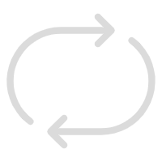

<html>
<head>
    <meta charset="UTF-8">
    <meta name="viewport"
          content="width=device-width, user-scalable=no, initial-scale=1.0, maximum-scale=1.0, minimum-scale=1.0">
    <meta http-equiv="X-UA-Compatible" content="ie=edge">
    <title>Audio</title>
    <script src="https://cdn.bootcdn.net/ajax/libs/vue/3.2.47/vue.global.js"></script>
    <style>
      html, body, ul, li {
        padding: 0;
        margin: 0;
      }
      li {
        list-style-type: none;
      }
      #app {
        padding: 20px;
      }
      .player {
        width: 1022px;
        height: 670px;
        border-radius: 6px;
        box-shadow: 0 0 10px  gray;
      }
      .player-header {
        box-sizing: border-box;
        padding: 6px;
        height: 60px;
        background-color: rgba(77, 239, 202, 0.8);
        /*color: rgb(250, 250, 250);*/
        color: #fff;
        font-size: 17px;
        line-height: 48px;
        border-top-left-radius: 6px;
        border-top-right-radius: 6px;
      }
      .player-body {
        display: flex;
        height: calc(100% - 60px - 70px);
      }
      .player-body-list {
        box-sizing: border-box;
        padding: 10px 5px;
        width: 200px;
        height: 100%;
        background-color: rgba(117, 183, 239, 0.3);
        overflow: auto;
      }
      .player-body-list::-webkit-scrollbar {
        width: 0;
      }
      .player-body-list-item {
        margin: 3px;
        padding: 2px;
        font-size: 14px;
        color: #333;
        cursor: pointer;
      }
      .player-body-list-item:hover, .player-body-list-item-playing {
        background-color: rgba(117, 183, 239, 0.2);
      }
      .player-body-detail {
        height: 100%;
        flex: 1;
        background-color: rgba(127, 255, 212, 0.2);
      }
      .player-footer {
        display: flex;
        justify-content: space-between;
        height: 70px;
        border-bottom-left-radius: 6px;
        border-bottom-right-radius: 6px;
      }
      .player-footer-control {
        width: 470px;
        background-color: azure;
      }
      .player-footer-control > .control {
        padding-top: 8px;
        display: flex;
        justify-content: space-around;
        cursor: pointer;
      }
      .control > .control-icon {
          width: 30px;
          height: 30px;
      }
      .process {
        width: 350px;
        height: 4px;
        background-color: rgb(229, 229, 229);
        margin: 15px auto 0;
        position: relative;
        border-radius: 2px;
      }
      .process-played {
        height: 4px;
        background-color: gray;
      }
      .process:hover {
        height: 6px;
        border-radius: 3px;
        box-shadow: 0 0 5px rgb(229, 229, 229);
      }
      .process:hover > .process-played {
        height: 6px;
        border-radius: 3px;
        box-shadow: 0 0 5px gray;
      }
      .process:hover > .process-pointer {
        display: block;
      }
      .process-pointer {
        display: none;
        position: absolute;
          left: -4px;
        top: -1px;
        width: 8px;
        height: 8px;
        border-radius: 50%;
        background-color: gray;
      }
    </style>
</head>
<body>

<div id="app"></div>

<script>
  /*
  * 暂停&播放切换
  * 列表
  * 上一首/下一首
  * 停止
  * 循环方式
  * 进度条
  * */
</script>

<script type="module">
  import { Player } from './base.js'
  import { musicNameList, getMusicName }  from './musicNameList.js'
  const { createApp, onMounted, ref, getCurrentInstance } = Vue

  const Component = {
    template: `
    <div class="player">
      <div class="player-header">
        <div class="player-header-name">音乐播放器</div>
      </div>
      <div class="player-body">
        <!-- 音频列表 -->
        <ul class="player-body-list">
          <template v-for="(name, index) in musicNameList" :key="name">
            <li
              :class="{ 'player-body-list-item-playing': audioIndex === index }"
              class="player-body-list-item"
              @click="changeAudio(index)">
              {{ name.split('.')[0] }}
            </li>
          </template>
        </ul>
        <!-- 播放详情 - 可视化信息 -->
        <div class="player-body-detail"></div>
      </div>
      <div class="player-footer">
        <div class="player-footer-info"></div>
        <div class="player-footer-control">
          <div class="control">
            
            
            
            
            
            
          </div>
          <div class="process" @mousedown="downProcess" ref="process">
            <div class="process-played" :style="{ width: playProcess }"></div>
            <div class="process-pointer" @mousedown="downPointer" :style="{ left: 'calc(' + playProcess + ' - 4px)' }"></div>
          </div>
        </div>
        <div class="player-footer-other"></div>
      </div>
    </div>
    `,
    setup () {
      const instance = getCurrentInstance().proxy

      let player, isPlaying = ref(false)
      onMounted(() => {
        player = createPlayer()
        window.player = player
        // 获取进度条最左端与窗口的距离
        skewProcess = instance.$refs.process.offsetLeft
        // 滚动条滚动时重新计算（进度条最左端与窗口的距离可能会发生变化）
        window.addEventListener('scroll', () => {
          skewProcess = instance.$refs.process.offsetLeft - window.scrollX
        })

        // 开始监听播放器
        watchAction()
      })

      function createPlayer () {
        return new Player(
          `./assets/music/${getMusicName(0)}`,
          '.player-body-detail',
          {
            show: false,
            buttonTarget: {
              // play: '.play',
              // pause: '.pause',
              // prev: '.prev',
              // next: '.next',
              // forward: '.forward',
              // backward: '.backward'
            },
            buttonAfterCallback: {
              play () {
                isPlaying.value = true
                console.log(isPlaying.value)
              },
              pause () {
                isPlaying.value = false
                console.log(isPlaying.value)
              }
            }
          }
        )
      }

      function watchAction() {
        /*
        * 点击播放可能会播放失败（或直接操作controls控件），所以如果直接在点击播放后修改 isPlaying 状态可能不会同步更新
        * 通过 player.watcher 通过监听audio元素的事件来通知是否播放
        * 避免播放失败的情况下播放状态未同步的问题
        * */
        player.watcher.on('loadeddata', ({ duration }) => {
          totalTime.value = duration
        })
        player.watcher.on('playing', () => {
          isPlaying.value = true
        })
        player.watcher.on('pause', () => {
          isPlaying.value = false
        })
        player.watcher.on('ended', () => {
          changeAudioByIndex(++audioIndex.value)
        })
        player.watcher.on('timeupdate', ({ currentTime, duration }) => {
          const val = currentTime / duration
          playProcess.value = getPercent(val)
        })
      }

      const playProcess = ref(0) // 播放进度
      const totalTime = ref(0) // 音频总时长
      let skewProcess = 0 // 进度条左边的相对位置
      let startOffset = 0 // 按下鼠标时鼠标的相对位置
      let skewDistance = 0 // 按下鼠标时与当前位置的距离
      let pauseBeforeStatus // 调整进度时需要暂停，用来记录调整进度之前的状态
      const isPress = ref(false) // 是否按下 TODO 不需要响应式
      function getPercent (val) {
        return (val * 100).toFixed(1) + '%'
      }
      // 根据进度条已播放区域的距离计算当前播放进度（时间）
      function getCurrentPositionTime (offset) {
        const percent = offset / instance.$refs.process.offsetWidth
        return percent * totalTime.value
      }
      // 点击进度条调整进度
      function downProcess (event) {
        if (event.target.className === 'process-pointer') return
        const targetTime = getCurrentPositionTime(event.offsetX)
        player.changePlayProcess(targetTime)
      }
      // 点击进度指示点
      function downPointer (event) {
        // 调整进度时暂停播放，记录播放前的状态
        pauseBeforeStatus = isPlaying.value
        pause()

        isPress.value = true
        // 鼠标按下时修改相对位置
        startOffset = event.clientX
        skewDistance = 0

        window.onmousemove = movePointer
        window.onmouseup = () => {
          isPress.value = false
          // 如果调整进度前是播放中状态，继续播放
          if (pauseBeforeStatus) play()
          // 然后重置状态
          pauseBeforeStatus = false
        }
      }
      // 移动进度指示点
      function movePointer (event) {
        if (!isPress.value) return
        skewDistance += event.movementX
        // 鼠标点击的位置 - 进度条左端距浏览器左边窗口的距离 + 鼠标当前与按下时的偏移量（正负）
        const currentPointX = startOffset - skewProcess + skewDistance
        const targetTime = getCurrentPositionTime(currentPointX)
        player.changePlayProcess(targetTime)
      }

      function play () {
        player.play()
      }
      function pause () {
        player.pause()
      }
      function forward() {
        player.forward()
      }

      const audioIndex = ref(0)
      function changeAudio(index) {
        console.log(index, audioIndex.value)
        if (audioIndex.value === index) return
        if (index === undefined) return
        audioIndex.value = index
        changeAudioByIndex(index)
      }
      function changeAudioByIndex (index) {
        name = getMusicName(index)
        player.changeAudio(`./assets/music/${name}`)
      }

      return {
        isPlaying,
        musicNameList,
        audioIndex,
        playProcess,
        isPress,

        play,
        pause,
        forward,
        changeAudio,
        downProcess,
        downPointer
      }
    }
  }
  const app = createApp(Component)
  app.mount('#app')
</script>

</body>
</html>
